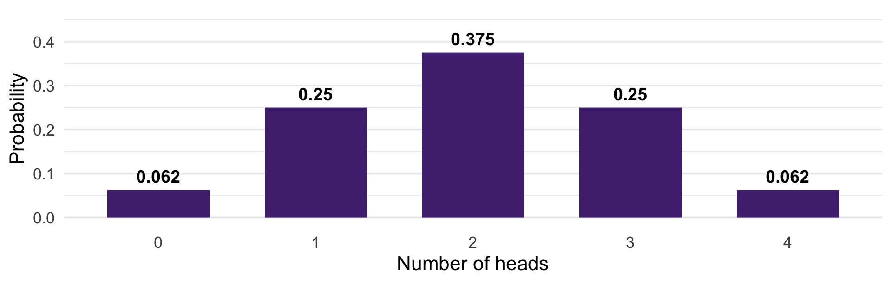
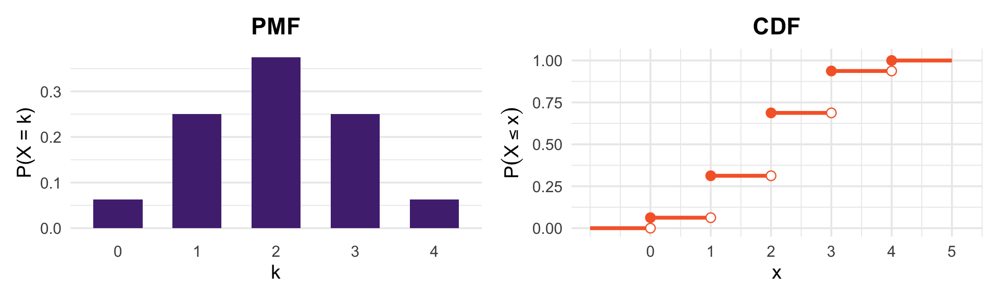
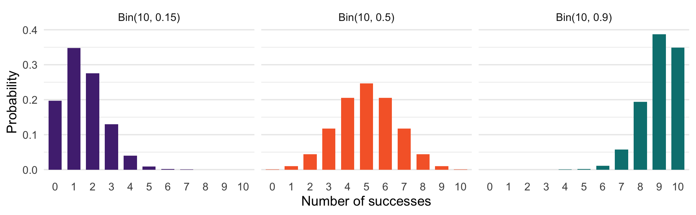
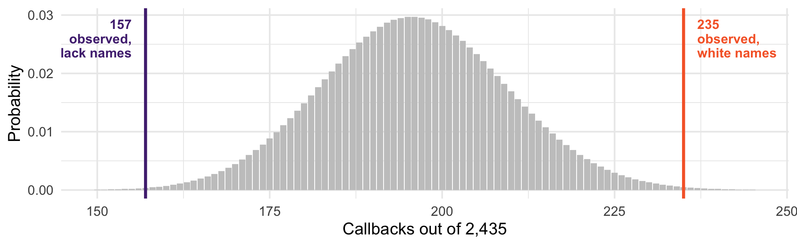

[1] 0.375[1] 0.6875Bernoulli and Binomial Distributions
We can now talk about events and their probabilities
But events can be tricky. “The event that at least 3 of 5 respondents turn out” is a mouthful, and hard to do arithmetic on it.
Today we attach numbers to outcomes
Precise probabilities
Averages
Descriptive Stats
A random variable is a function that assigns a number to every outcome in the sample space
That is really all it is: a rule for turning “what happened” into “a number”
\(S\) = all ways 5 sampled voters could turn out or not
\(X\) = how many of them turned out
The outcome (Yes, No, Yes, Yes, No) becomes \(X = 3\)
The outcome is what actually happened in the world
The random variable is a summary of it that we chose
Different questions call for different summaries of the same outcome
From one survey we might define \(X\) = number who turned out, \(Y\) = number who turned out and voted third party, \(Z\) = 1 if anyone did. Same sample space, three random variables.
You choose the random variable. It is a measurement decision.
A random variable is discrete if the values it takes with positive probability are finite or countably infinite
Continuous variables can take any value in an interval
Today and next time: discrete random variables.
Uncertainty over the sample space becomes uncertainty over the value of \(X\)
The distribution of \(X\) describes that uncertainty completely
If \(X\) = days a randomly chosen student was absent, the distribution answers every question: \(P(X = 0)\), \(P(X > 10)\), and so on
Once you know the distribution, you know everything probabilistic about the variable.
Flip four fair coins. Let \(X\) be the number of heads.
What is \(P(X = 1)\)?
What is \(P(X = 2 \text{ or } 3)\)?
What is \(P(X > 4)\)?

Note the shape: outcomes in the middle are more likely, because there are more ways to get them. That is the counting rule showing up.
The PMF of a discrete random variable is
\[p_X(x) = P(X = x)\]
\(X = x\) is an event, so this is just a probability
The support of \(X\) is the set of values it takes with positive probability
The PMF assigns probability “mass” to each point in the support
Non-negative: \(p_X(x) \geq 0\) everywhere, and \(> 0\) only on the support
Sums to one: \(\sum_j p_X(x_j) = 1\)
For any set \(S\) of values, \(P(X \in S) = \sum_{x \in S} p_X(x)\)
These are the axioms from Week 3, rewritten for a random variable. Nothing new here!
Often we do not want \(P(X = k)\). We want \(P(X \leq k)\) — at most three callbacks, no more than two defections.
The cumulative distribution function answers that:
\[F_X(x) = P(X \leq x)\]
Just add up the PMF from the bottom: \(F_X(x) = \sum_{k \leq x} p_X(k)\)
It is defined for every real \(x\), not only the values in the support

Four fair coins. The CDF is a step function: flat, then it jumps by exactly the PMF’s height at each value in the support.
It never decreases, starts at 0, and ends at 1
The size of each jump is the PMF: \(p_X(k) = F_X(k) - F_X(k-1)\)
Intervals are easy: \(P(a < X \leq b) = F_X(b) - F_X(a)\)
The two contain exactly the same information. The PMF is easier to look at; the CDF is easier to compute with — which is why R gives you both.
You are designing an educational policy experiment with three arms: Control, T1, T2.
You decide to randomize schools by flipping four coins. Let \(X\) be the number of heads:
\(X \in \{0, 1\}\) → Control
\(X = 2\) → T1
\(X > 2\) → T2
Look at the PMF two slides back. What share of schools lands in each arm? Would you use this scheme?
\(X \sim \text{Bern}(p)\) if
\[P(X = 1) = p, \quad P(X = 0) = 1 - p\]
Story: an indicator of success in a single trial with two outcomes.
Any event \(A\) has an indicator variable \(I(A) \sim \text{Bern}(P(A))\)
Did this respondent turn out? Did this bill pass? Did this résumé get a callback?
A single résumé in the Bertrand and Mullainathan study is a Bernoulli trial with \(p\) = the callback probability for that name
The Bernoulli is where binary social science data starts. Logistic regression is a model for this type of data.
Let \(X\) be the number of successes in \(n\) independent Bernoulli trials, each with success probability \(p\)
Then \(X \sim \text{Bin}(n, p)\)
\(\text{Bin}(1, p)\) is just \(\text{Bern}(p)\)
And if \(X \sim \text{Bin}(n, p)\), then \(n - X \sim \text{Bin}(n, 1-p)\) — counting failures instead of successes
We want \(P(X = k)\): the probability of exactly \(k\) successes in \(n\) trials. Let’s build it in two.
First: how likely is one specific sequence with \(k\) successes?
The trials are independent, so multiply: \(k\) successes at probability \(p\) each, and \(n-k\) failures at \(1-p\) each.
\[p^{k}(1-p)^{n-k}\]
Second: how many such sequences are there?
We need the number of ways to choose which \(k\) of the \(n\) trials succeeded. Order within the sequence does not matter — we only care which trials succeeded.
\[\binom{n}{k}\]
That is the binomial coefficient from Week 3. Counting never goes away!
Every sequence with \(k\) successes is equally likely, and there are \(\binom{n}{k}\) of them:
\[p_X(k) = \binom{n}{k} p^{k}(1-p)^{n-k}, \qquad k = 0, 1, \ldots, n\]
\(p^{k}(1-p)^{n-k}\) — the probability of one specific sequence
\(\binom{n}{k}\) — how many such sequences exist
[1] 0.375[1] 0.6875The d / p / r prefixes work for every distribution in R: density (or mass), cumulative probability, and random draws.

\(p\) controls where the mass sits; \(n\) controls how many outcomes are possible. Symmetric only when \(p = 0.5\).
Each résumé either got a callback or did not. That is a Bernoulli trial, and the count per group is binomial.
resumes |>
group_by(ethnicity) |>
summarise(n = n(), callbacks = sum(callback), rate = round(mean(callback), 4))# A tibble: 2 × 4
ethnicity n callbacks rate
<chr> <int> <int> <dbl>
1 afam 2435 157 0.0645
2 cauc 2435 235 0.0965235 callbacks against 157, out of 2,435 résumés each.
Imagine names truly did not matter, and every résumé had the same callback probability: the pooled rate:
[1] 0.0805[1] 196We would expect about 196 in each group. We saw 235 and 157.
We have a distribution for this. If \(X \sim \text{Bin}(2435, 0.0805)\):
[1] 0.002565257[1] 0.001585065Each tail is roughly 2 in 1,000. If names truly did not matter, a split this lopsided would be very strange.

The grey distribution is what “no difference” predicts. Both observed values sit far out in the tails.
We assumed something was not true: that names do not matter
We worked out what the data would look like if that assumption held
We found the observed data would be very unlikely under it
That is a (frequentist) hypothesis test. We will formalize these soon.
A committee of 8 senators votes independently, each supporting a bill with probability 0.6. What is the probability exactly 5 vote yes?
What is the probability the bill gets a majority (5 or more)?
A survey firm calls 20 households, each answering with probability 0.3. What is the expected number of responses? What is \(P(\text{no responses at all})\)?
For question 3, why might the independence assumption fail in practice?